V4 should look like the same game rendered by a more mature late-Famicom/NES-era art team: substantial readable forms, deliberate native clusters, controlled values, material-specific detail, and strong depth. The target is constraint-informed authenticity—not literal hardware compliance and not unrestricted modern pixel art with an NES-ish palette. Unification means shared workmanship and construction economy while every location keeps its own identity.
1–2. Thesis and two-axis benchmark
Workmanship
Gate first; Interior second. Ask how confident, rich, readable, and materially authored V4 should feel. Transfer massing, hierarchy, depth, cluster control, and selective detail—not Gothic subject matter.
Constraint signature
V3 construction evidence + linked NES/Famicom vocabulary. Ask why the result still reads like economical console game graphics: visible tile/metatile reuse, local palette discipline, stepped bands, and bounded variants.
A future polished scene must satisfy both axes. Gate is not claimed hardware-perfect; V3 is not the V4 quality ceiling.
Controlled hierarchy nests ornament inside broad architectural and shadow fields.
Stone, glass, fabric, brass, and paving use distinct treatment.
The gameplay lane stays quiet enough for actors and bullets.
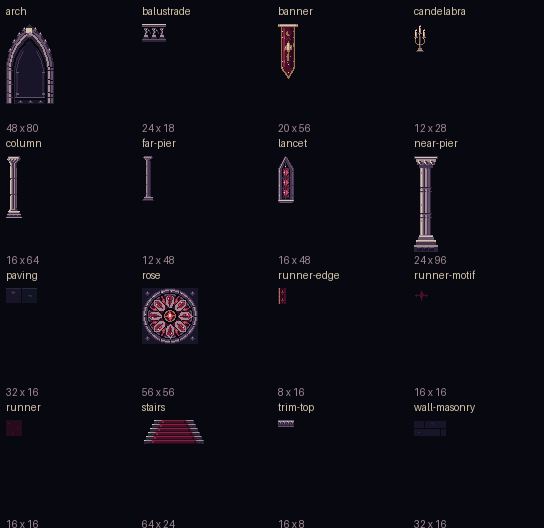
AtlasLocalized ornament and material vocabulary
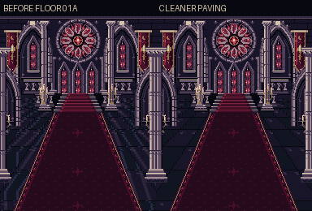
Negative exampleFloor rollback: detail for detail’s sake Removing repeated reflection activity restored clearer dark stone. More pixels are not automatically better.
5. V3 constraint-signature baseline
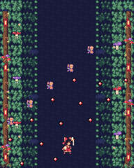
V3/current source evidenceForest · 1×
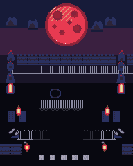
V3/current source evidenceRooftop · 1×
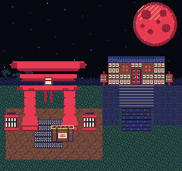
V3/current source evidenceShrine night · 1×
Study the finite visible tile vocabulary, compact local palette logic, and repeated modules.
Notice stepped/banded treatment and reuse as part of the medium’s texture—not defects by default.
Preserve: cool enclosed mood, dark gameplay lane, grounded trunks/roots, and edge framing.
Polish later: stronger tree identities, woodland depth, and less obvious motif repetition.
Constraint question: which repetition should remain visibly tile/metatile-like instead of being naturalized away?
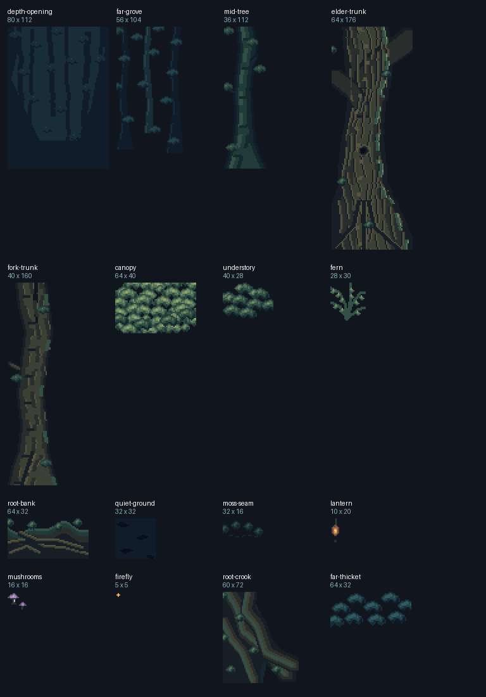
AtlasOrganic construction vocabulary
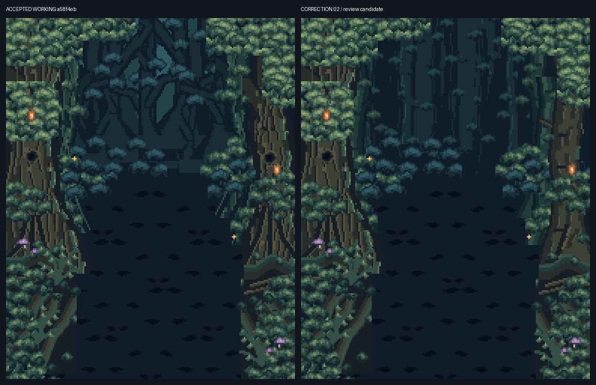
Negative / comparison boardOrganic grounding and repetition Thicker grounded forms improve the lane; future work should distinguish console-like reuse from procedural-looking repetition.
7. Misty Lake discrepancy + primary Astra Flash warning
Hydrated native authored proof · 1×Corrected story
Preserve: open water lane, cold atmosphere, scarlet reflection, and distant landmarks.
Polish later: natural hierarchy, depth, and less recognizable repeated foliage/patchy texture.
Constraint opportunity: water and mist can use deliberate repeated tiles, stepped bands, and sparse patterned gradients.
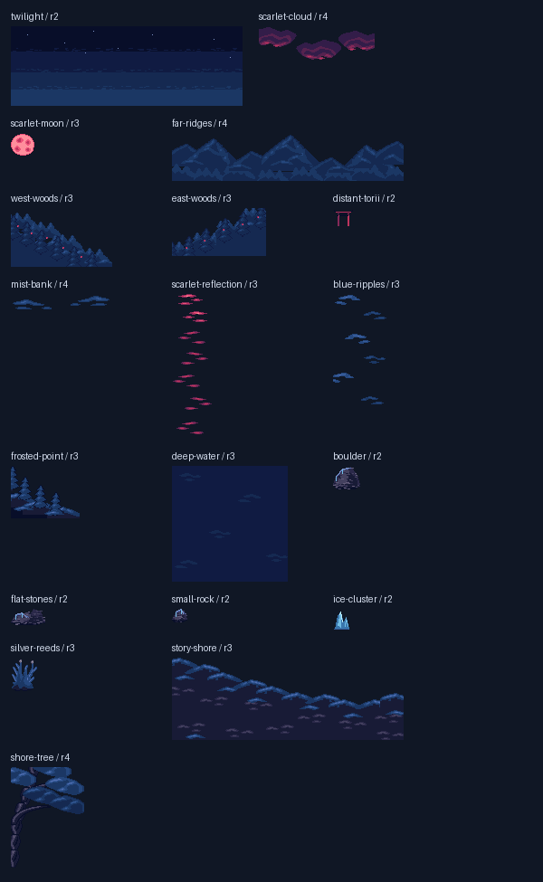
Hydrated atlasCorrected complete asset set
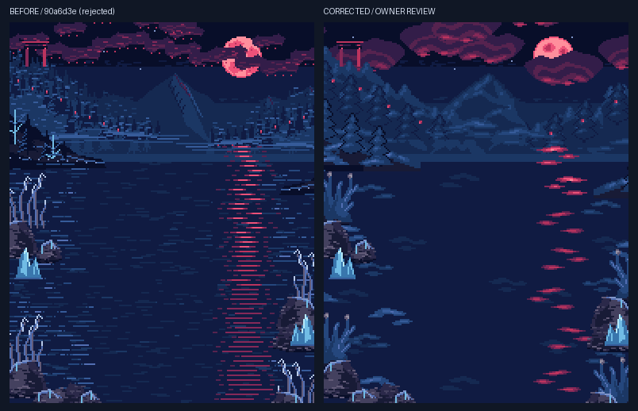
Negative exampleRejected-before → corrected Primary historical Astra Flash warning: replace thin continuous/shape-first drafting and procedural strokes with substantial grouped clusters and calm gaps.
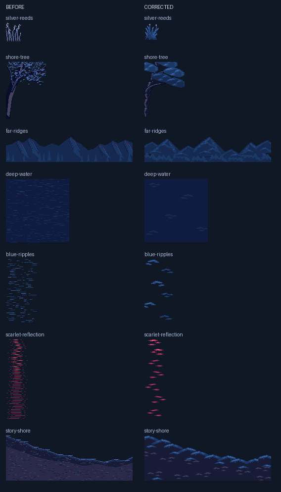
Focused comparison boardLine/shape-first → explicit clusters Reeds, tree, ridges, water, clouds, mist, and reflection show the construction change without altering the broad scene concept.
Preserve: frontal identity, time-of-day continuity, and solid readable structure.
Polish later: landscape variation, roof/courtyard material, and depth behind the hall.
Constraint question: retain believable repeated architectural/landscape modules while improving variants and palette discipline.
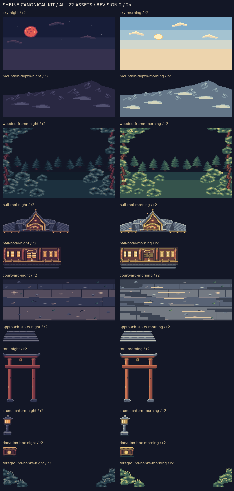
AtlasShared location kit across time of day
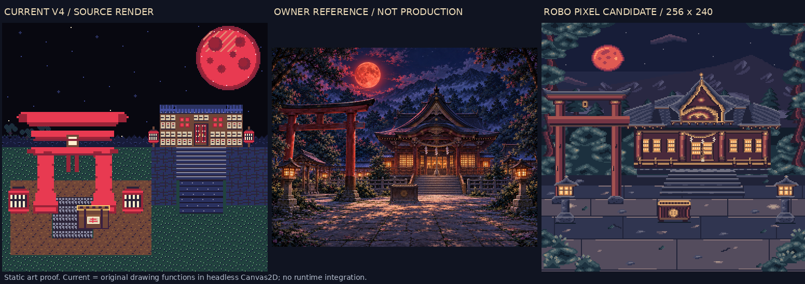
Comparison boardNight continuity and structural upgrade
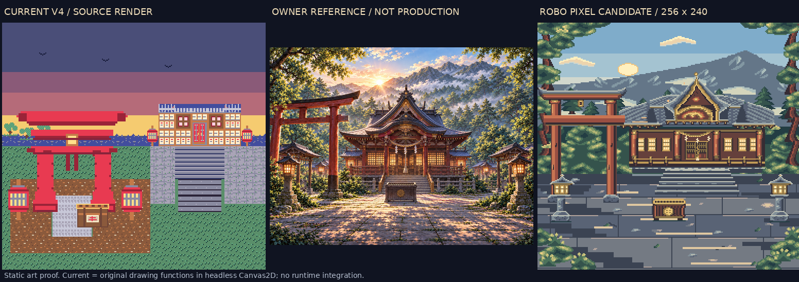
Comparison boardMorning is more than a palette swap
10. External vocabulary and technical references
No third-party screenshot is copied here. These links support visual vocabulary and technical understanding; they are not repository assets and not instructions to copy art.
Screenshot sets — links only
Ninja Gaiden (NES) — study shared grammar across architecture, natural stages, and dramatic heights.
Ninja Gaiden II (NES) — study palette-banded atmosphere and scene variety under one direction.
Visual consequence: reason in reusable 8×8 motifs and 16×16 color regions, compact local ramps, finite visible vocabulary, and stepped/patterned gradients. Late-era mapper sophistication expands the vocabulary; it does not erase tile/palette structure.
11. Final artist checklist
Silhouette: major forms read at 1× before internal texture.
Clusters: edges are deliberately stepped, not smooth contours rasterized later.
Value/color: coherent ramps and local palette groups separate focal forms, distance, and quiet areas.
Depth: overlap, scale, contrast, placement, and detail compression establish layers.
Materials: stone, wood, foliage, water, fabric, glass, and metal do not share generic noise.
Scene identity: preserve each location’s architecture, mood, framing, and landmarks.
Family identity: compare workmanship to Gate/Interior and construction economy to the constraint baseline.
Before mutation: inspect guide + benchmarks + target proof, then write a bounded preserve/change plan.
Reference continuity: shared brief → shared board → adjacent family generation → whole-family review → separate canonical authoring.
Authority: Owner visual acceptance remains decisive; no automated art score substitutes for review.
12. Explicit stop
Evidence board only. This artifact grants no authority to mutate canonical art, change RoboPixel state, alter V1–V4 or any proof branch, integrate runtime assets, publish, merge, freeze, release, or begin the later unified polish pass. Stop for Owner review.